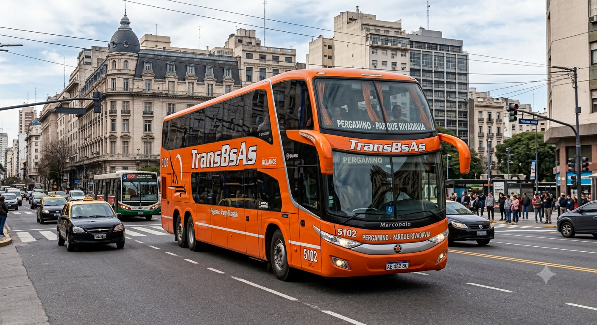
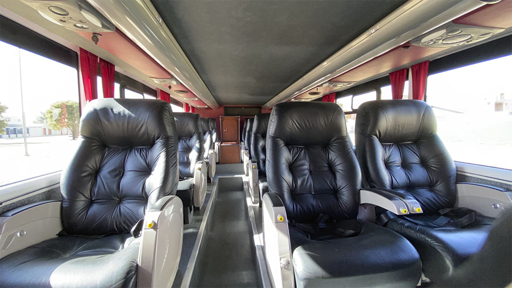
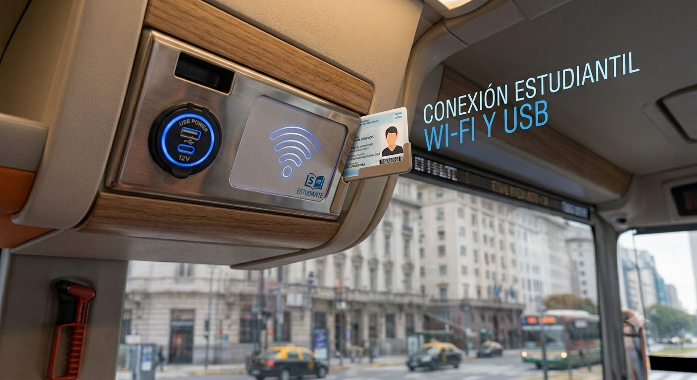
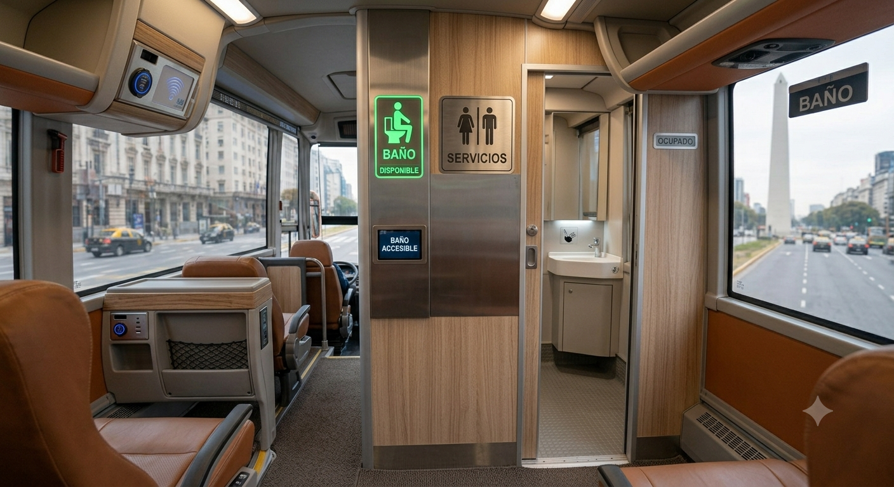
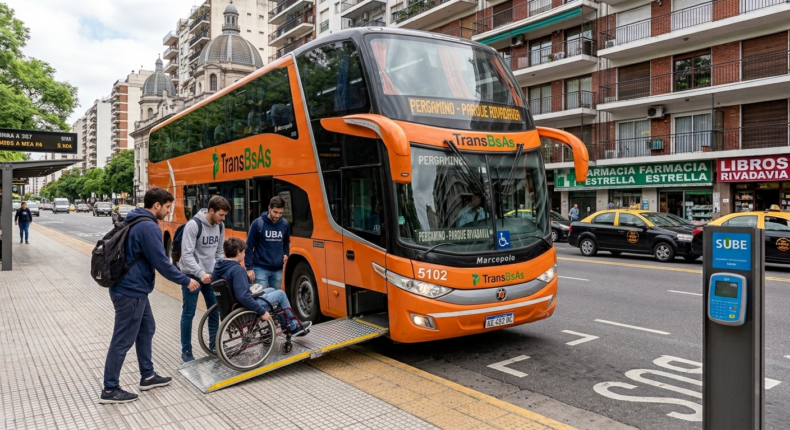
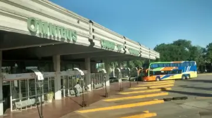
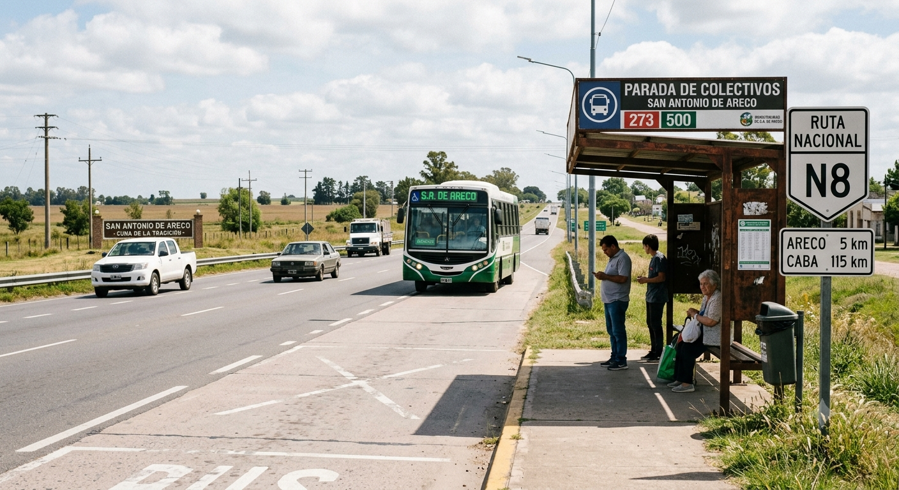
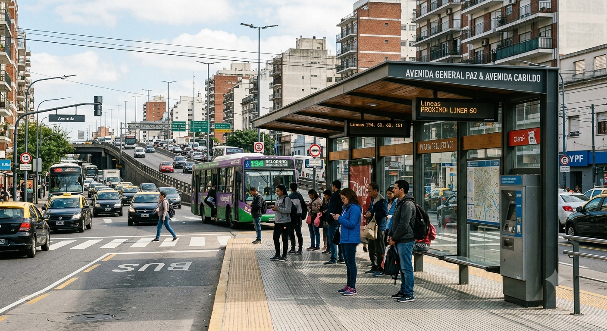
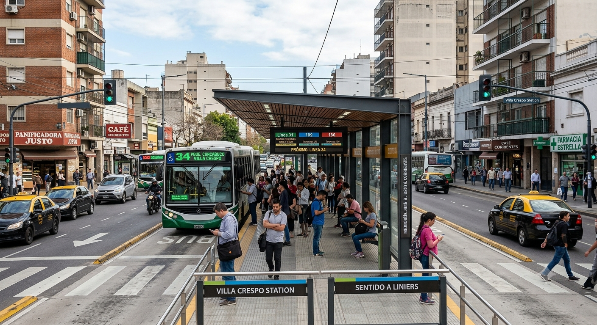
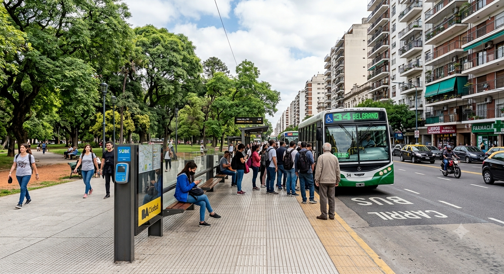

Línea TransBsAs: Conectando Pergamino con tu Futuro
Un servicio rápido, cómodo y seguro diseñado para estudiantes de Pergamino que cursan en las principales universidades de Buenos Aires. Viajá directo a Caballito y Almagro.
Nuestros Puntos Estratégicos
Pergamino a Parque Rivadavia
- Cruce de San Antonio de Areco
- Puente Saavedra
- Estación Villa Crespo
- Parque Rivadavia (Av. Rivadavia 4800)
Parque Rivadavia a Pergamino
- Parque Rivadavia (Rivadavia y Acoyte)
- Pacífico (Palermo)
- Puente Saavedra / Areco
- Terminal Pergamino
Conocé Nuestra Flota
Vehículos de última generación pensados para hacer tu viaje más confortable.


Asientos Semi-Cama
Reclina hasta 160° con reposapiés integrado.

WiFi + USB en cada asiento
Conectividad permanente para estudiar a bordo.

Baño a Bordo
Sanitarios equipados disponibles durante todo el viaje.

Acceso para Silla de Ruedas
Rampa hidráulica automática y espacio de anclaje certificado para estudiantes con movilidad reducida.
Itinerario Detallado de Paradas
Terminal de Ómnibus de Pergamino
Origen - Salida Principal
Av. de Mayo y Bv. Rocha / Av. Colón
Parada Secundaria Urbana
Cruce de Arrecifes - RN 8
Parada de Ruta
Cruce de Capitán Sarmiento - RN 8
Parada de Ruta
Cruce de San Antonio de Areco
RN 8 y RP 41
Fábrica Ford / Centro de Transbordo Pacheco
Conexión Norte
Puente Saavedra
Av. Gral Paz y Cabildo (Conexión Subte D / Ciudad Universitaria)
Estación Villa Crespo
Av. J.B. Justo y Corrientes (Conexión Subte B / Tren San Martín)
Agronomía
Av. San Martín y Nazarre (Facultad Agronomía/Veterinaria)
Parque Rivadavia
Av. Rivadavia al 4800 (Destino Final - Subte A)
Parque Rivadavia
Av. Rivadavia y Acoyte (Origen CABA)
Agronomía
Av. San Martín y Pampa
Pacífico
Av. J.B. Justo y Santa Fe (Subte D / Tren San Martín)
Puente Saavedra
Av. Gral Paz y Cabildo
Cruce de San Antonio de Areco
RN 8
Cruce de Capitán Sarmiento - RN 8
Parada de Ruta
Cruce de Arrecifes - RN 8
Parada de Ruta
Av. Pellegrini y Av. Rocha
Ingreso Pergamino
Terminal de Ómnibus de Pergamino
Final del Recorrido
Los Puntos del Recorrido
Los lugares que conectamos cada día para acercarte a tu universidad.





Beneficios para los Estudiantes
Sabemos que tu tiempo y comodidad son fundamentales. Por eso, reforzamos nuestra flota en los momentos clave de tu semana académica.
Lunes Mañana
Frecuencias reforzadas hacia CABA para llegar a tu primera clase.
Viernes Tarde
Más servicios hacia Pergamino para que disfrutes tu fin de semana.
Conectividad Total
Acceso directo a las líneas de Subte A, B y D desde nuestras paradas.
Estudiá a bordo
WiFi de alta velocidad y puertos USB en cada asiento.

Recorrido en el Mapa
💡 Tip para estudiantes: Podés desplegar el menú lateral del mapa para activar o desactivar las capas de Ida y Vuelta según el viaje que necesites consultar.
Horarios y Salidas
| Origen | Destino | Frecuencia | Primera Salida | Última Salida |
|---|---|---|---|---|
| Pergamino | Parque Rivadavia | Cada 2hs | 04:30 AM | 20:30 PM |
| Pque. Rivadavia | Pergamino | Cada 2hs | 06:00 AM | 22:00 PM |
| Refuerzo Estudiantil (Vie/Lun) | Cada 45 min | --- | --- | |
* Los horarios pueden variar en feriados. Consultar disponibilidad en tiempo real vía app.